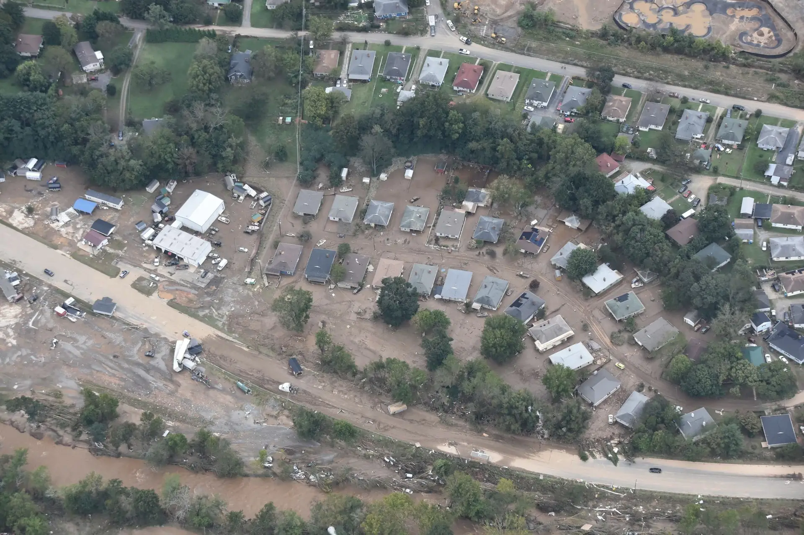
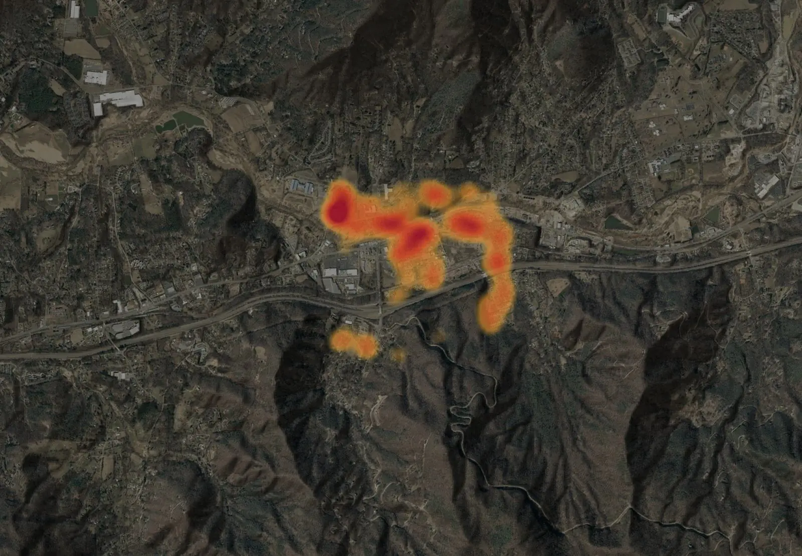

<title>Groma Disaster Assessment</title>
<meta name="claude:viewport-fit-sides" content="cover">
<meta name="description" content="Groma calls the damage to every building after a disaster from public imagery, lidar and field records. Explore the Swannanoa valley after Hurricane Helene in 3D.">
<link rel="icon" href="data:image/svg+xml,__FAVICON__">
<link rel="preload" as="image" href="assets/web/hero.webp" imagesrcset="assets/web/hero-960.webp 960w, assets/web/hero.webp 1920w" imagesizes="100vw">
<link rel="preconnect" href="https://fonts.googleapis.com">
<link rel="preconnect" href="https://fonts.gstatic.com" crossorigin>
<link rel="stylesheet" href="https://fonts.googleapis.com/css2?family=Public+Sans:wght@400;500;600&family=IBM+Plex+Mono:wght@400;500&display=swap">
<style>
/* Hallmark · macrostructure: product homepage (hero, statement, product list, live demo, proof, use, CTA blocks, link footer)
 * theme: custom (one sans family, light-first, monochrome; colour only in data) · Public Sans + IBM Plex Mono
 * references studied 2026-10-26: palantir.com, nvidia.com, about.meta.com (one family, short headlines, product rows, CTA blocks)
 * pre-emit critique: P5 H5 E4 S5 R5 V4 */
:root {
  --bg: #FFFFFF; --bg-2: #F4F4F2; --ink: #111111; --ink-2: #4A4A4A; --ink-3: #737373;
  --line: #E6E6E3; --line-2: #CCCCC7; --btn: #111111; --on-btn: #FFFFFF;
  --paper: #F1F0EB; --sheet: #FFFFFF; --contour: #8F6A44; --hydro: #1F5FA8; --hydro-ink: #FFFFFF;
  --signal: #111111; --focus: #1F5FA8; --map-bg: #E8E7E2; --lz: #1F7A5A; --on-lz: #FFFFFF;
  --d0: #98A09A; --d1: #E2B33A; --d2: #E1852C; --d3: #CC4A28; --d4: #9E1A2C; --dep: #D6802E; --scour: #3478C4;
  --code-bg: #111111; --code-ink: #EDEDED; --code-dim: #8C8C8C;
  --sans: "Public Sans", "Helvetica Neue", Helvetica, Arial, system-ui, sans-serif;
  --mono: "IBM Plex Mono", ui-monospace, "SFMono-Regular", Menlo, monospace;
  --measure: 80rem;
  --ease: cubic-bezier(0.22, 1, 0.36, 1);
  color-scheme: light;
}
@media (prefers-color-scheme: dark) {
  :root:not([data-theme="light"]) {
    --bg: #0A0A0A; --bg-2: #151515; --ink: #F2F2F2; --ink-2: #B5B5B5; --ink-3: #8A8A8A;
    --line: #262626; --line-2: #3A3A3A; --btn: #F2F2F2; --on-btn: #0A0A0A;
    --paper: #1B1B19; --sheet: #111111; --contour: #B98A5A; --hydro: #6EA8E0; --hydro-ink: #0A1420;
    --signal: #F2F2F2; --focus: #6EA8E0; --map-bg: #121211; --code-bg: #000000;
    color-scheme: dark;
  }
}
:root[data-theme="dark"] {
  --bg: #0A0A0A; --bg-2: #151515; --ink: #F2F2F2; --ink-2: #B5B5B5; --ink-3: #8A8A8A;
  --line: #262626; --line-2: #3A3A3A; --btn: #F2F2F2; --on-btn: #0A0A0A;
  --paper: #1B1B19; --sheet: #111111; --contour: #B98A5A; --hydro: #6EA8E0; --hydro-ink: #0A1420;
  --signal: #F2F2F2; --focus: #6EA8E0; --map-bg: #121211; --code-bg: #000000;
  color-scheme: dark;
}

* { box-sizing: border-box; }
html, body { overflow-x: clip; }
html { scroll-behavior: smooth; scroll-padding-top: 72px; }
body { margin: 0; background: var(--bg); color: var(--ink); font: 400 1rem/1.55 var(--sans); -webkit-font-smoothing: antialiased; }
a { color: inherit; text-underline-offset: 3px; text-decoration-thickness: 1px; }
:focus-visible { outline: 2px solid var(--focus); outline-offset: 3px; }
img { max-width: 100%; }
.wrap { max-width: var(--measure); margin: 0 auto; padding-left: max(20px, env(safe-area-inset-left, 0px)); padding-right: max(20px, env(safe-area-inset-right, 0px)); }
h1, h2, h3 { font-weight: 500; font-style: normal; margin: 0; letter-spacing: -0.02em; text-wrap: balance; overflow-wrap: anywhere; min-width: 0; }
p { margin: 0; max-width: 62ch; }
.cap { font: 400 0.8125rem/1.4 var(--sans); color: var(--ink-3); }
.mono { font-family: var(--mono); }

/* buttons */
.btn { display: inline-flex; align-items: center; gap: 0.45rem; min-height: 2.75rem; padding: 0 1.25rem; border-radius: 999px; border: 1px solid var(--btn); background: var(--btn); color: var(--on-btn); font: 500 0.9375rem/1 var(--sans); text-decoration: none; white-space: nowrap; cursor: pointer; transition: opacity 150ms var(--ease), background-color 150ms var(--ease), color 150ms var(--ease); }
.btn:hover { opacity: 0.86; }
.btn:active { transform: translateY(1px); }
.btn.ghost { background: transparent; color: var(--ink); border-color: var(--line-2); }
.btn.ghost:hover { opacity: 1; border-color: var(--ink); }
.btn.small { min-height: 2.25rem; padding: 0 1rem; font-size: 0.875rem; }
.btn.primary { background: var(--btn); color: var(--on-btn); border-color: var(--btn); }

/* top bar */
.top { position: sticky; top: 0; z-index: 20; background: color-mix(in srgb, var(--bg) 92%, transparent); -webkit-backdrop-filter: saturate(1.4) blur(12px); backdrop-filter: saturate(1.4) blur(12px); border-bottom: 1px solid var(--line); }
.top .wrap { display: flex; align-items: center; gap: 2rem; height: 64px; }
.brand { display: flex; align-items: center; gap: 0.55rem; color: var(--ink); text-decoration: none; }
.brand svg { width: 26px; height: 26px; flex: none; --bronze: #A8743E; }
.brand b { font-weight: 600; font-size: 1.2rem; letter-spacing: -0.01em; }
.top nav { display: flex; gap: 1.75rem; }
.top nav a { color: var(--ink-2); text-decoration: none; font-size: 0.9375rem; white-space: nowrap; }
.top nav a:hover { color: var(--ink); }
.top .right { margin-left: auto; display: flex; align-items: center; gap: 1.25rem; }
.top .right > a:not(.btn) { color: var(--ink-2); text-decoration: none; font-size: 0.9375rem; white-space: nowrap; }
@media (max-width: 860px) { .top nav, .top .right > a:not(.btn) { display: none; } }

/* hero: one photograph, one line, two buttons */
.hero { position: relative; height: clamp(560px, 84vh, 900px); overflow: hidden; color: #FFFFFF; background: #1A1A1A; }
.hero img { position: absolute; inset: 0; width: 100%; height: 100%; object-fit: cover; object-position: 50% 55%; }
.hero::after { content: ""; position: absolute; inset: 0; background: linear-gradient(180deg, rgba(0,0,0,0) 35%, rgba(0,0,0,0.62) 100%), linear-gradient(90deg, rgba(0,0,0,0.35) 0%, rgba(0,0,0,0) 55%); }
.hero .wrap { position: relative; z-index: 1; height: 100%; display: flex; flex-direction: column; justify-content: flex-end; padding-bottom: clamp(2.5rem, 6vw, 4.5rem); }
h1 { font-size: clamp(2.75rem, 6.6vw, 5.75rem); line-height: 1; letter-spacing: -0.035em; max-width: 13ch; }
.hero p { margin-top: 1.25rem; font-size: clamp(1.05rem, 1.4vw, 1.25rem); color: rgba(255,255,255,0.86); max-width: 40ch; }
.hero .ctas { display: flex; flex-wrap: wrap; gap: 0.75rem; margin-top: 2rem; }
.hero .btn { background: #FFFFFF; color: #111111; border-color: #FFFFFF; }
.hero .btn.ghost { background: transparent; color: #FFFFFF; border-color: rgba(255,255,255,0.6); }
.hero .btn.ghost:hover { border-color: #FFFFFF; }
.hero .credit { position: absolute; right: max(20px, env(safe-area-inset-right, 0px)); bottom: 1rem; z-index: 1; font-size: 0.75rem; color: rgba(255,255,255,0.7); max-width: 22rem; text-align: right; }
@media (max-width: 700px) { .hero .credit { position: static; text-align: left; margin-top: 1.5rem; } }

/* sections */
section.band > .wrap { padding-block: clamp(4.5rem, 9vw, 8rem); }
.band.alt { background: var(--bg-2); }
.head { display: grid; grid-template-columns: minmax(0, 1fr) minmax(0, 28rem); gap: 1rem 4rem; align-items: end; }
@media (max-width: 880px) { .head { grid-template-columns: minmax(0, 1fr); } }
h2 { font-size: clamp(2rem, 4vw, 3.25rem); line-height: 1.05; letter-spacing: -0.03em; }
.lede { color: var(--ink-2); font-size: 1.0625rem; }

/* statement */
.statement p { font-size: clamp(1.75rem, 3.4vw, 2.9rem); line-height: 1.16; letter-spacing: -0.025em; max-width: 30ch; color: var(--ink); }
.statement p span { color: var(--ink-3); }
.statement .cap { margin-top: 1.5rem; font-size: 0.875rem; }

/* products: names in a list, one line each */
.products { list-style: none; margin: 2.5rem 0 0; padding: 0; border-top: 1px solid var(--line); }
.products a { display: grid; grid-template-columns: minmax(0, 18rem) minmax(0, 1fr) auto; gap: 0.5rem 2.5rem; align-items: center; padding: 1.6rem 0.25rem; border-bottom: 1px solid var(--line); color: var(--ink); text-decoration: none; transition: background-color 150ms var(--ease); }
.products a:hover { background: var(--bg-2); }
.products .name { font-size: clamp(2rem, 4vw, 3.25rem); line-height: 1; letter-spacing: -0.035em; }
.products .desc { color: var(--ink-2); font-size: 1.0625rem; max-width: 52ch; }
.products .meta { display: flex; align-items: center; gap: 0.75rem; color: var(--ink-3); font-size: 0.8125rem; white-space: nowrap; }
.products .arr { opacity: 0; transform: translateX(-4px); transition: opacity 150ms var(--ease), transform 150ms var(--ease); color: var(--ink); }
.products a:hover .arr { opacity: 1; transform: none; }
.tag { border: 1px solid var(--line-2); border-radius: 999px; padding: 0.15rem 0.55rem; font-size: 0.75rem; color: var(--ink-2); }
@media (max-width: 760px) { .products a { grid-template-columns: minmax(0, 1fr) auto; } .products .desc { grid-column: 1 / -1; } }

/* the live valley */
.explorer > .wrap { padding-block: clamp(4.5rem, 9vw, 8rem) 2rem; }
.quad { border-block: 1px solid var(--line); background: var(--map-bg); display: grid; grid-template-columns: minmax(0, 1fr) 19rem; }
@media (max-width: 960px) { .quad { grid-template-columns: minmax(0, 1fr); } }
.stage { position: relative; height: clamp(440px, 74vh, 760px); min-width: 0; overflow: hidden; background: var(--map-bg); }
.stage canvas { position: absolute; inset: 0; display: block; width: 100%; height: 100%; touch-action: pan-y; }
.stage.live canvas { touch-action: none; cursor: grab; }
.stage.live canvas:active { cursor: grabbing; }
.poster { position: absolute; inset: 0; width: 100%; height: 100%; object-fit: cover; transition: opacity 600ms var(--ease); }
.stage.ready .poster { opacity: 0; pointer-events: none; }
.hud { position: absolute; font: 400 0.75rem/1.4 var(--mono); color: var(--ink); background: color-mix(in srgb, var(--sheet) 90%, transparent); -webkit-backdrop-filter: blur(8px); backdrop-filter: blur(8px); border: 1px solid var(--line); border-radius: 10px; padding: 0.5rem 0.7rem; pointer-events: none; }
.hud.read { left: 1rem; bottom: 1rem; max-width: calc(100% - 10rem); }
.hud.read b { font-weight: 500; }
.hud.scale { right: 1rem; bottom: 1rem; display: flex; flex-direction: column; gap: 0.25rem; align-items: flex-end; }
.hud.scale i { display: block; height: 6px; border: 1px solid var(--ink); border-top: 0; }
@media (max-width: 600px) { .hud.scale { bottom: auto; top: 4rem; } .hud.read { max-width: calc(100% - 2rem); } }
.explore { position: absolute; top: 1rem; left: 1rem; display: flex; gap: 0.45rem; flex-wrap: wrap; z-index: 2; }
.explore .btn { background: color-mix(in srgb, var(--sheet) 92%, transparent); color: var(--ink); border-color: var(--line); }
.explore .btn.primary { background: var(--btn); color: var(--on-btn); border-color: var(--btn); }
.cover { position: absolute; inset: 0; display: grid; place-items: center; background: transparent; border: 0; cursor: pointer; padding: 0; z-index: 1; }
.cover span { font: 500 0.9375rem/1.3 var(--sans); color: var(--on-btn); background: var(--btn); border-radius: 999px; padding: 0.75rem 1.25rem; max-width: 80%; text-align: center; }
@media (hover: none) { .cover { display: none; } }
.stage.live .cover { display: none; }
.nogl { position: absolute; left: 1rem; top: 4rem; right: 1rem; font-size: 0.875rem; background: var(--sheet); border: 1px solid var(--line); border-radius: 10px; padding: 0.55rem 0.8rem; }
.legend { background: var(--sheet); border-left: 1px solid var(--line); display: flex; flex-direction: column; min-width: 0; margin: 0; }
@media (max-width: 960px) { .legend { border-left: 0; border-top: 1px solid var(--line); } }
.legend fieldset { border: 0; border-top: 1px solid var(--line); margin: 0; padding: 1rem 1.15rem; display: grid; gap: 0.5rem; min-width: 0; }
.legend fieldset:first-of-type { border-top: 0; }
.legend legend { padding: 0; float: left; width: 100%; margin-bottom: 0.45rem; }
.opt { display: grid; grid-template-columns: 1.1rem 1.6rem minmax(0, 1fr) auto; align-items: center; gap: 0.5rem; font-size: 0.9rem; cursor: pointer; }
.opt input { margin: 0; accent-color: var(--ink); width: 1rem; height: 1rem; }
.opt .n { font: 400 0.75rem/1 var(--mono); color: var(--ink-3); font-variant-numeric: tabular-nums; }
.sw { width: 1.6rem; height: 0.8rem; border-radius: 2px; }
.sw.heat { background: linear-gradient(90deg, var(--d1), var(--d2), var(--d3), var(--d4)); }
.sw.ground { background: linear-gradient(90deg, var(--scour) 0 50%, var(--dep) 50% 100%); }
.sw.road { background: linear-gradient(var(--d4), var(--d4)) center / 100% 3px no-repeat; }
.sw.lz { background: radial-gradient(circle, var(--lz) 0 3px, transparent 4px); }
.sw.sector { border: 2px solid var(--hydro); }
.sw.img { background: linear-gradient(135deg, var(--contour), var(--lz)); opacity: 0.75; }
.sw.relief { background: repeating-linear-gradient(0deg, var(--paper) 0 3px, var(--contour) 3px 4px); }
.facts { margin: auto 0 0; padding: 1rem 1.15rem 0.7rem; border-top: 1px solid var(--line); display: grid; grid-template-columns: minmax(0, 1fr) auto; gap: 0.35rem 0.8rem; font-size: 0.85rem; }
.facts dt { color: var(--ink-2); }
.facts dd { margin: 0; font: 500 0.85rem/1.5 var(--mono); text-align: right; font-variant-numeric: tabular-nums; }
.src { padding: 0 1.15rem 1.15rem; font-size: 0.75rem; color: var(--ink-3); line-height: 1.5; }

/* how one building gets its call */
.anat { display: grid; grid-template-columns: minmax(0, 1fr) minmax(0, 1fr); gap: 2rem clamp(2rem, 5vw, 5rem); margin-top: 3rem; }
@media (max-width: 880px) { .anat { grid-template-columns: minmax(0, 1fr); } }
.stackwrap { position: sticky; top: 5rem; height: min(70vh, 560px); display: grid; place-items: center; perspective: 1500px; }
@media (max-width: 880px) { .stackwrap { top: 64px; height: 300px; z-index: 2; background: var(--bg); border-bottom: 1px solid var(--line); } }
.stack { position: relative; width: 280px; height: 280px; transform-style: preserve-3d; transform: rotateX(56deg) rotateZ(-36deg) translateZ(-60px); }
@media (max-width: 880px) { .stack { width: 150px; height: 150px; transform: rotateX(56deg) rotateZ(-36deg) translateZ(-40px); } }
.plate { position: absolute; inset: 0; transform-style: preserve-3d; transform: translateZ(calc(var(--i) * var(--gap, 34px))); transition: transform 600ms var(--ease), opacity 450ms var(--ease); }
.plate.ahead { opacity: 0; transform: translateZ(calc(var(--i) * var(--gap, 34px) + 120px)); }
.plate .face { transition: filter 400ms var(--ease); }
.plate:not(.on) .face { filter: saturate(0.2) brightness(0.75); }
@media (max-width: 880px) { .plate { --gap: 20px; } }
.plate.on .face { box-shadow: 0 0 0 2px var(--ink); }
.stack[data-step="5"] .plate, .stack[data-step="6"] .plate { --gap: 44px; }
@media (max-width: 880px) { .stack[data-step="5"] .plate, .stack[data-step="6"] .plate { --gap: 26px; } }
.face { position: absolute; inset: 0; background: var(--sheet); border: 1px solid var(--line-2); overflow: hidden; }
.face img { width: 100%; height: 100%; object-fit: cover; display: block; }
.face svg { position: absolute; inset: 0; width: 100%; height: 100%; }
.face.card { padding: 10px; display: flex; flex-direction: column; gap: 5px; font: 400 9px/1.25 var(--mono); color: var(--ink-2); }
.face.card b { font: 600 13px/1 var(--sans); color: var(--ink); }
.bars { display: grid; grid-template-columns: repeat(5, minmax(0, 1fr)); gap: 3px; align-items: end; height: 46px; }
.bars i { display: block; min-height: 2px; }
.bars-l { display: grid; grid-template-columns: repeat(5, minmax(0, 1fr)); gap: 3px; font-size: 7px; color: var(--ink-3); text-align: center; }
.plate .tag { position: absolute; left: 100%; top: 0; margin-left: 12px; white-space: nowrap; border: 0; padding: 0; font: 400 11px/1 var(--sans); color: var(--ink-2); }
@media (max-width: 880px) { .plate .tag { display: none; } }
.steps { list-style: none; margin: 0; padding: 0; display: grid; counter-reset: s; }
.steps li { min-height: 26vh; display: grid; align-content: center; gap: 0.5rem; padding-block: 1.4rem; border-top: 1px solid var(--line); counter-increment: s; }
@media (max-width: 880px) { .steps li { min-height: 0; padding-block: 1.4rem; } }
.steps li::before { content: counter(s) " / 6"; font: 400 0.8125rem/1 var(--mono); color: var(--ink-3); }
.steps h3 { font-size: clamp(1.4rem, 2.2vw, 1.75rem); line-height: 1.1; letter-spacing: -0.02em; }
.steps p { color: var(--ink-2); }

/* proof */
.proof .grid { display: grid; grid-template-columns: minmax(0, 1fr) minmax(0, 1fr); gap: 3rem clamp(2rem, 6vw, 6rem); margin-top: 3rem; }
@media (max-width: 880px) { .proof .grid { grid-template-columns: minmax(0, 1fr); } }
.fig { border-top: 1px solid var(--ink); padding-top: 1.25rem; display: grid; gap: 0.75rem; align-content: start; }
.fig .num { font-size: clamp(4.5rem, 10vw, 8rem); line-height: 0.85; letter-spacing: -0.05em; font-weight: 500; font-variant-numeric: tabular-nums; }
.fig .num small { font-size: 0.45em; letter-spacing: -0.02em; color: var(--ink-3); }
.fig h3 { font-size: 1.375rem; letter-spacing: -0.015em; }
.fig p { color: var(--ink-2); }
.fig .cap { border-top: 1px solid var(--line); padding-top: 0.75rem; max-width: none; }

/* use it */
.tabs { display: flex; gap: 0.4rem; margin-top: 2.5rem; overflow-x: auto; padding-bottom: 2px; }
.tabs button { background: none; border: 1px solid var(--line-2); border-radius: 999px; min-height: 2.5rem; padding: 0 1.1rem; font: 500 0.9rem/1 var(--sans); color: var(--ink-2); cursor: pointer; white-space: nowrap; }
.tabs button[aria-selected="true"] { color: var(--on-btn); background: var(--btn); border-color: var(--btn); }
.tabs button:hover { color: var(--ink); border-color: var(--ink); }
.tabs button[aria-selected="true"]:hover { color: var(--on-btn); }
.panel { display: grid; grid-template-columns: minmax(0, 1fr) minmax(0, 1.1fr); gap: 2rem clamp(2rem, 5vw, 4.5rem); padding-top: 2.25rem; }
@media (max-width: 880px) { .panel { grid-template-columns: minmax(0, 1fr); } }
.panel[hidden] { display: none; }
.panel h3 { font-size: clamp(1.6rem, 2.6vw, 2.1rem); line-height: 1.08; letter-spacing: -0.025em; }
.panel ol { margin: 1.25rem 0 0; padding-left: 1.3rem; display: grid; gap: 0.7rem; color: var(--ink-2); }
.panel ol b { color: var(--ink); font-weight: 600; }
.dl { border: 1px solid var(--line); border-radius: 14px; background: var(--sheet); padding: 1.15rem; display: grid; gap: 0.8rem; align-content: start; min-width: 0; }
.dl .acts { display: flex; flex-wrap: wrap; gap: 0.5rem; }
.dl .note { font-size: 0.8125rem; color: var(--ink-3); }
.dl .note:empty { display: none; }
pre.code { margin: 0; background: var(--code-bg); color: var(--code-ink); font: 400 0.78rem/1.65 var(--mono); padding: 1rem 1.1rem; overflow-x: auto; border-radius: 10px; }
pre.code .c { color: var(--code-dim); }
.peek { margin: 0; max-height: 12rem; overflow: auto; background: var(--bg-2); border-radius: 10px; font: 400 0.75rem/1.5 var(--mono); padding: 0.7rem 0.8rem; white-space: pre; }
.codehead { display: flex; justify-content: space-between; align-items: center; gap: 1rem; }

/* who it's for: plain text cards, each one a mail link */
.who { display: grid; grid-template-columns: repeat(3, minmax(0, 1fr)); gap: 1rem; margin-top: 2.5rem; }
@media (max-width: 960px) { .who { grid-template-columns: repeat(2, minmax(0, 1fr)); } }
@media (max-width: 620px) { .who { grid-template-columns: minmax(0, 1fr); } }
.who a { display: flex; flex-direction: column; gap: 0.75rem; padding: 1.5rem; border: 1px solid var(--line); border-radius: 16px; color: var(--ink); text-decoration: none; background: var(--sheet); transition: border-color 150ms var(--ease); min-width: 0; }
.who a:hover { border-color: var(--ink); }
.who b { font-weight: 500; font-size: 1.375rem; letter-spacing: -0.02em; line-height: 1.15; }
.who span { color: var(--ink-2); flex: 1; }
.who i { font-style: normal; font-weight: 500; font-size: 0.9375rem; }

/* pricing */
.plans { display: grid; grid-template-columns: repeat(3, minmax(0, 1fr)); gap: 1rem; margin-top: 2.5rem; }
@media (max-width: 900px) { .plans { grid-template-columns: minmax(0, 1fr); } }
.plan { display: flex; flex-direction: column; gap: 1rem; padding: 1.75rem; border: 1px solid var(--line); border-radius: 16px; background: var(--sheet); min-width: 0; }
.plan.featured { border-color: var(--ink); }
.plan h3 { font-size: 1.25rem; letter-spacing: -0.015em; }
.plan .price { font-size: 2.25rem; font-weight: 500; letter-spacing: -0.035em; line-height: 1; }
.plan ul { margin: 0; padding: 0 0 0 1.1rem; display: grid; gap: 0.5rem; color: var(--ink-2); flex: 1; }
.plan .btn { align-self: flex-start; }

/* call-to-action blocks */
section.band.cta > .wrap { padding-top: 0; }
.go { display: grid; grid-template-columns: minmax(0, 1fr) minmax(0, 1fr); gap: 1rem; }
@media (max-width: 760px) { .go { grid-template-columns: minmax(0, 1fr); } }
.go a { position: relative; display: flex; flex-direction: column; justify-content: space-between; min-height: 15rem; padding: 1.75rem; border-radius: 16px; text-decoration: none; background: var(--bg-2); color: var(--ink); border: 1px solid var(--line); transition: background-color 150ms var(--ease); }
.go a.dark { background: var(--btn); color: var(--on-btn); border-color: var(--btn); }
.go a:hover { background: var(--line); }
.go a.dark:hover { background: var(--btn); opacity: 0.9; }
.go b { font-weight: 500; font-size: clamp(1.75rem, 3.2vw, 2.6rem); letter-spacing: -0.03em; line-height: 1.05; }
.go span { font-size: 1rem; opacity: 0.75; max-width: 36ch; }
.go .arr { position: absolute; top: 1.5rem; right: 1.75rem; font-size: 1.5rem; opacity: 1; }

/* footer */
footer { background: var(--bg-2); border-top: 1px solid var(--line); font-size: 0.875rem; }
footer .wrap { padding-block: 3.5rem 2.5rem; }
.fcols { display: grid; grid-template-columns: minmax(0, 1.3fr) repeat(2, minmax(0, 0.7fr)) minmax(0, 1.4fr); gap: 2rem 3rem; }
@media (max-width: 880px) { .fcols { grid-template-columns: minmax(0, 1fr) minmax(0, 1fr); } }
@media (max-width: 480px) { .fcols { grid-template-columns: minmax(0, 1fr); } }
.fcols h4 { margin: 0 0 0.75rem; font-size: 0.8125rem; font-weight: 600; color: var(--ink); }
.fcols ul { list-style: none; margin: 0; padding: 0; display: grid; gap: 0.5rem; align-content: start; }
.fcols a { color: var(--ink-2); text-decoration: none; white-space: nowrap; }
.fcols a:hover { color: var(--ink); text-decoration: underline; }
.fcols p { color: var(--ink-3); }
.legal { margin-top: 3rem; padding-top: 1.25rem; border-top: 1px solid var(--line); display: flex; flex-wrap: wrap; gap: 0.5rem 2rem; justify-content: space-between; color: var(--ink-3); font-size: 0.8125rem; }

.plumb { transform-box: view-box; transform-origin: var(--px) 15px; animation: settle 2.6s cubic-bezier(.3,.6,.2,1) both; }
@keyframes settle { 0% { transform: rotate(9deg); } 30% { transform: rotate(-5deg); } 55% { transform: rotate(2.5deg); } 78% { transform: rotate(-1deg); } 100% { transform: rotate(0); } }
@media (prefers-reduced-motion: reduce) {
  html { scroll-behavior: auto; }
  .plumb { animation: none; }
  .plate, .poster, .btn, .products a, .products .arr { transition: none; }
}
</style>

<header class="top">
  <div class="wrap">
    <a class="brand" href="#top" aria-label="Groma, top of page">__MARK__<b>Groma</b></a>
    <nav aria-label="Sections">
      <a href="#product">Product</a>
      <a href="#who">Who it's for</a>
      <a href="#explore">Live demo</a>
      <a href="#proof">Results</a>
      <a href="#pricing">Pricing</a>
    </nav>
    <div class="right">
      <a href="__REPO__" target="_blank" rel="noopener">GitHub</a>
      <a class="btn small" href="#pricing">Get started</a>
    </div>
  </div>
</header>

<main id="top">
  <section class="hero" aria-labelledby="h1">
    
    <div class="wrap">
      <h1 id="h1">Every building, after the disaster.</h1>
      <p>Groma calls the damage to every building from public imagery, so search teams start in the right place.</p>
      <div class="ctas">
        <a class="btn" href="#pricing">Get started free</a>
        <a class="btn ghost" href="#explore">See it work</a>
      </div>
      <p class="credit">Civil Air Patrol over the Swannanoa valley, North Carolina, September 28, 2024.</p>
    </div>
  </section>

  <section class="band statement" aria-label="Why Groma exists">
    <div class="wrap">
      <p>After Helene, more than 100 search teams logged 80,000 damage assessments by hand. <span>Groma gives them a head start: every building, called from public imagery, with the evidence behind each call.</span></p>
      <p class="cap">Source: DHS Science and Technology, October 7, 2024.</p>
    </div>
  </section>

  <section class="band alt" id="product" aria-labelledby="h-product">
    <div class="wrap">
      <div class="head">
        <h2 id="h-product">What Groma does</h2>
        <p class="lede">Any FEMA disaster, any US state. Open source under Apache-2.0; it runs on one laptop or a county server, with no cloud account.</p>
      </div>
      <ul class="products">
        <li><a href="#how"><span class="name">Assess</span><span class="desc">Type a FEMA disaster number. Every building gets one of FEMA's five damage levels, a probability and the evidence.</span><span class="meta"><span class="arr" aria-hidden="true">→</span></span></a></li>
        <li><a href="#how"><span class="name">Verify</span><span class="desc">People judge the uncertain calls without seeing the model's answer, with Civil Air Patrol photos of the building.</span><span class="meta"><span class="arr" aria-hidden="true">→</span></span></a></li>
        <li><a href="#explore"><span class="name">Respond</span><span class="desc">Roads likely cut, people cut off, landing-zone candidates and 1 km search sectors, as KML for TAK.</span><span class="meta"><span class="arr" aria-hidden="true">→</span></span></a></li>
        <li><a href="#use"><span class="name">Export</span><span class="desc">FEMA's damage survey fields, GeoPackage, File Geodatabase, KML and CSV with US National Grid.</span><span class="meta"><span class="arr" aria-hidden="true">→</span></span></a></li>
        <li><a href="#use"><span class="name">Share</span><span class="desc">A state's day-3 assessment packet, private records for verified owners and public counts per area.</span><span class="meta"><span class="arr" aria-hidden="true">→</span></span></a></li>
        <li><a href="#use"><span class="name">Offline</span><span class="desc">Carry an assessed area to a field laptop and work with no network. Addresses stay behind.</span><span class="meta"><span class="tag">Beta</span><span class="arr" aria-hidden="true">→</span></span></a></li>
      </ul>
    </div>
  </section>


  <section class="band" id="who" aria-labelledby="h-who">
    <div class="wrap">
      <div class="head">
        <h2 id="h-who">Who it's for</h2>
        <p class="lede">The same building-by-building call, packaged for the people who act on it.</p>
      </div>
      <div class="who">
        <a href="mailto:__CONTACT__?subject=Groma%20pilot%3A%20emergency%20management"><b>Emergency management</b><span>Counties, states and tribes. A damage count the day imagery arrives, the state's FEMA initial damage assessment packet, and search sectors ranked worst first.</span><i>Ask for a pilot <span aria-hidden="true">→</span></i></a>
        <a href="mailto:__CONTACT__?subject=Groma%3A%20insurance%20and%20lending"><b>Insurers and lenders</b><span>A call for every insured or financed building, with the probability, the imagery and the evidence, from a method you can inspect and re-run.</span><i>Talk to us <span aria-hidden="true">→</span></i></a>
        <a href="mailto:__CONTACT__?subject=Groma%3A%20National%20Guard%20and%20responders"><b>National Guard and responders</b><span>An offline field kit: damage, roads cut, people cut off, landing-zone candidates and 1 km sectors in US National Grid, ready for TAK.</span><i>Ask for a field kit <span aria-hidden="true">→</span></i></a>
        <a href="mailto:__CONTACT__?subject=Groma%3A%20aid%20and%20recovery"><b>Aid groups and nonprofits</b><span>Area-level damage counts to decide where cash, supplies and volunteers go first, without exposing any one home.</span><i>Talk to us <span aria-hidden="true">→</span></i></a>
        <a href="mailto:__CONTACT__?subject=Groma%3A%20research%20and%20data"><b>Researchers and AI labs</b><span>Building calls checked by people, field records to compare against, and every new disaster as a fresh test. The code is Apache-2.0.</span><i>Work with us <span aria-hidden="true">→</span></i></a>
        <a href="mailto:__CONTACT__?subject=Groma%3A%20a%20record%20for%20my%20home"><b>Residents</b><span>Through a county or legal aid group using Groma: how your street looks, and a private record of your own home for FEMA or your insurer.</span><i>Ask about your area <span aria-hidden="true">→</span></i></a>
      </div>
    </div>
  </section>

  <section class="explorer" id="explore" aria-labelledby="h-explore">
    <div class="wrap">
      <div class="head">
        <h2 id="h-explore">Swannanoa after Helene, in 3D</h2>
        <p class="lede">USGS elevation and NC OneMap imagery, with where the damage is, the roads likely cut and the search sectors Groma drew. Damage is smoothed over 70 m, so no single home can be picked out.</p>
      </div>
    </div>
    <div class="quad">
      <div class="stage" id="stage">
        
        <canvas id="gl" aria-hidden="true"></canvas>
        <button class="cover" id="cover" type="button" aria-label="Start exploring the 3D map"><span>Click to explore. Drag to turn, scroll to zoom.</span></button>
        <div class="explore">
          <button class="btn small primary" type="button" id="btn-live" aria-pressed="false">Explore</button>
          <button class="btn small" type="button" id="btn-reset">Reset view</button>
          <button class="btn small" type="button" id="btn-top">Top down</button>
        </div>
        <div class="hud read" id="readout" aria-live="polite"><b>Point at the map</b><br>US National Grid, elevation and sector</div>
        <div class="hud scale" aria-hidden="true"><span>1 km</span><i id="scale-bar" style="width:80px"></i></div>
        <p class="nogl" id="nogl" hidden>This browser cannot draw the 3D map, so a still is shown. The layers are in the downloads under Use it.</p>
      </div>
      <form class="legend" id="legend" aria-label="Map layers">
        <fieldset>
          <legend class="cap">Surface</legend>
          <label class="opt"><input type="radio" name="surf" id="surf-post" value="post" checked><span class="sw img"></span><span>After, spring 2025</span><span class="n">NC OneMap</span></label>
          <label class="opt"><input type="radio" name="surf" id="surf-pre" value="pre"><span class="sw img"></span><span>Before, Feb 2023</span><span class="n">NC OneMap</span></label>
          <label class="opt"><input type="radio" name="surf" id="surf-relief" value="relief"><span class="sw relief"></span><span>Relief, 20 m contours</span><span class="n">3DEP</span></label>
        </fieldset>
        <fieldset>
          <legend class="cap">Overlays</legend>
          <label class="opt"><input type="checkbox" id="ov-heat" checked><span class="sw heat"></span><span>Damage density</span><span class="n" id="n-heat"></span></label>
          <label class="opt"><input type="checkbox" id="ov-sectors" checked><span class="sw sector"></span><span>Search sectors, 1 km</span><span class="n" id="n-sec"></span></label>
          <label class="opt"><input type="checkbox" id="ov-roads" checked><span class="sw road"></span><span>Roads likely cut</span><span class="n" id="n-roads"></span></label>
          <label class="opt"><input type="checkbox" id="ov-lz"><span class="sw lz"></span><span>Landing-zone candidates</span><span class="n" id="n-lz"></span></label>
          <label class="opt"><input type="checkbox" id="ov-ground"><span class="sw ground"></span><span>Ground change, lidar</span><span class="n" id="n-gr"></span></label>
        </fieldset>
        <dl class="facts">
          <dt>Structures read</dt><dd id="f-read"></dd>
          <dt>Expected Major or Destroyed</dt><dd id="f-sev"></dd>
          <dt>Cut off if debris blocks roads</dt><dd id="f-cut"></dd>
          <dt>Debris, cubic yards</dt><dd id="f-debris"></dd>
        </dl>
        <p class="src">Roads from OpenStreetMap, marked where a mapped landslide, a building called Destroyed or an unverified bridge may cut them. Landing zones are candidates for reconnaissance, never approved sites.</p>
      </form>
    </div>
  </section>

  <section class="band" id="how" aria-labelledby="h-anat">
    <div class="wrap">
      <div class="head">
        <h2 id="h-anat">How Groma calls one building</h2>
        <p class="lede">A manufactured home in Swannanoa, record __NCR_SHORT__ at US National Grid __USNG__. Six layers of evidence, stacked.</p>
      </div>
      <div class="anat">
        <div class="stackwrap" aria-hidden="true">
          <div class="stack" id="stack" data-step="1">
            <div class="plate" style="--i:0" data-k="1"><div class="face"><svg viewBox="0 0 1 1" preserveAspectRatio="none"><polygon points="__RING_PRE__" fill="none" stroke="var(--hydro)" stroke-width="0.012"/></svg></div><span class="tag">Before, 2023</span></div>
            <div class="plate" style="--i:1" data-k="2"><div class="face"><svg viewBox="0 0 1 1" preserveAspectRatio="none"><polygon points="__RING_POST__" fill="none" stroke="var(--hydro)" stroke-width="0.012"/></svg></div><span class="tag">After, 2025</span></div>
            <div class="plate" style="--i:2" data-k="3"><div class="face"></div><span class="tag">Change</span></div>
            <div class="plate" style="--i:3" data-k="4"><div class="face"></div><span class="tag">Ground, lidar</span></div>
            <div class="plate" style="--i:4" data-k="5"><div class="face card" id="an-ev"></div><span class="tag">Evidence</span></div>
            <div class="plate" style="--i:5" data-k="6"><div class="face card" id="an-verdict"></div><span class="tag">Call</span></div>
          </div>
        </div>
        <ol class="steps" id="steps">
          <li data-k="1"><h3>Before: a home on its lot</h3><p>NC OneMap orthoimagery, February 2023. The outline comes from FEMA's USA Structures, aligned to the roof first.</p></li>
          <li data-k="2"><h3>After: bare ground</h3><p>NC OneMap post-Helene orthoimagery, spring 2025. Same outline, same ground, months later.</p></li>
          <li data-k="3"><h3>Change, against the town</h3><p>How much the pixels inside the outline changed, compared with every other building in Swannanoa: <b id="an-z"></b> standard deviations above typical.</p></li>
          <li data-k="4"><h3>The ground, from lidar</h3><p>Against the 2017 surface, the ground here moved no more than <b id="an-dz"></b> m: no landslide or scour. Elsewhere in town the lidar flagged <b id="an-gflags"></b> buildings.</p></li>
          <li data-k="5"><h3>Each piece of evidence, weighed</h3><p>The image model says Destroyed. Pixel change leans severe. No blue tarp. No river level for this reach, so flood depth stays empty rather than guessed.</p></li>
          <li data-k="6"><h3>The call, and who checks it</h3><p>Destroyed, <b>__P_DESTROYED__%</b>. Severe calls go to people before they count. Buncombe County's search team recorded this home Destroyed.</p></li>
        </ol>
      </div>
    </div>
  </section>

  <section class="band alt proof" id="proof" aria-labelledby="h-proof">
    <div class="wrap">
      <div class="head">
        <h2 id="h-proof">Results so far</h2>
        <p class="lede">Measured against inspectors and search teams who were there. Where it falls short, we say so.</p>
      </div>
      <div class="grid">
        <div class="fig">
          <p class="num">96<small>%</small></p>
          <h3>Eaton fire, Los Angeles County</h3>
          <p>CAL FIRE inspectors checked 2,246 buildings Groma's wildfire model had assessed. When it called a building destroyed or badly damaged, they agreed 95.7% of the time; it found 94.2% of the buildings they marked that way.</p>
          <p class="cap">One run, rule fixed before it ran. The wildfire model alone, not the whole system.</p>
        </div>
        <div class="fig">
          <p class="num">88<small> s</small></p>
          <h3>Swannanoa, North Carolina</h3>
          <p>All <span id="tb-n">__N_STRUCT__</span> buildings assessed on one laptop. Flood is harder: water inside a house does not show from above, so Groma found 15 of the 64 homes search teams recorded as Major or Destroyed. Every severe call goes to people before it counts.</p>
          <p class="cap">Flood accuracy is still being validated.</p>
        </div>
      </div>
    </div>
  </section>

  <section class="band" id="use" aria-labelledby="h-use">
    <div class="wrap">
      <div class="head">
        <h2 id="h-use">Use it</h2>
        <p class="lede">Pick who you are. Each tab has the steps and a real file from the Swannanoa run.</p>
      </div>
      <div class="tabs" role="tablist" aria-label="Who you are">
        <button type="button" role="tab" id="tab-em" aria-controls="p-em" aria-selected="true">Emergency management</button>
        <button type="button" role="tab" id="tab-in" aria-controls="p-in" aria-selected="false" tabindex="-1">Insurance and lending</button>
        <button type="button" role="tab" id="tab-ng" aria-controls="p-ng" aria-selected="false" tabindex="-1">National Guard</button>
      </div>

      <div class="panel" role="tabpanel" id="p-em" aria-labelledby="tab-em">
        <div>
          <h3>A damage count the day imagery arrives</h3>
          <ol>
            <li><b>Start Groma</b> on a laptop or county server with the commands here.</li>
            <li><b>New assessment:</b> enter the FEMA disaster number and pick the town.</li>
            <li><b>Send teams</b> by the ranked sectors and review queue. Export to FEMA's survey fields, GeoPackage or KML.</li>
          </ol>
        </div>
        <div class="dl">
          <div class="codehead"><span class="cap">Start it locally</span><button class="btn small ghost" type="button" data-copy="cmd-dev">Copy</button></div>
<pre class="code" id="cmd-dev">git clone __REPO__ groma
cd groma/pipeline
python3 -m venv .venv && .venv/bin/pip install -r requirements-dev.txt
NCR_DEV_OPEN=1 .venv/bin/python server.py   <span class="c"># API on :8000</span>
cd ../web && npm install
echo "VITE_API_URL=http://127.0.0.1:8000" > .env.development.local
npm run dev                                 <span class="c"># app on :5173</span></pre>
          <p class="note">The general image model's weights file is not in the repository; until it is added, that one channel stays off and Groma says so.</p>
          <div class="acts"><button class="btn small" type="button" id="dl-sectors">Download sectors (CSV)</button></div>
          <p class="note" id="st-sectors"></p>
        </div>
      </div>

      <div class="panel" role="tabpanel" id="p-in" aria-labelledby="tab-in" hidden>
        <div>
          <h3>Check a building before you pay on it</h3>
          <ol>
            <li><b>Open the building</b> by its US National Grid reference or on the map.</li>
            <li><b>Read the evidence:</b> the probability for each FEMA level and which evidence said what.</li>
            <li><b>Export</b> one row per building as CSV or GeoPackage for your claims system.</li>
          </ol>
        </div>
        <div class="dl">
          <div class="codehead"><span class="cap">The record above, as data</span></div>
          <pre class="peek" id="peek-rec"></pre>
          <div class="acts"><button class="btn small" type="button" id="dl-record">Download record (JSON)</button></div>
          <p class="note" id="st-record"></p>
        </div>
      </div>

      <div class="panel" role="tabpanel" id="p-ng" aria-labelledby="tab-ng" hidden>
        <div>
          <h3>One damage picture, on one laptop</h3>
          <ol>
            <li><b>Plan</b> with the 1 km sectors, landing-zone candidates and roads likely cut, in US National Grid.</li>
            <li><b>Load the plan</b> into TAK or Google Earth as KML.</li>
            <li><b>Go offline:</b> pack the area for a field laptop (beta).</li>
          </ol>
        </div>
        <div class="dl">
          <div class="codehead"><span class="cap">Pack an area for a field laptop</span><button class="btn small ghost" type="button" data-copy="cmd-pack">Copy</button></div>
<pre class="code" id="cmd-pack">cd groma/pipeline
PYTHONPATH=src .venv/bin/python -m terratriage.ops.offline pack --area swannanoa --tar</pre>
          <div class="acts">
            <button class="btn small" type="button" id="dl-plan">Download plan (GeoJSON)</button>
            <button class="btn small ghost" type="button" id="cp-kml">Copy plan as KML</button>
          </div>
          <p class="note" id="st-plan"></p>
        </div>
      </div>
    </div>
  </section>


  <section class="band alt" id="pricing" aria-labelledby="h-pricing">
    <div class="wrap">
      <div class="head">
        <h2 id="h-pricing">Free during launch</h2>
        <p class="lede">Every feature is free while Groma launches. Paid hosting and support will come later, announced well before anything changes.</p>
      </div>
      <div class="plans">
        <div class="plan">
          <h3>Run it yourself</h3>
          <p class="price">Free</p>
          <ul>
            <li>Every feature, no limits</li>
            <li>Your laptop or your server, your data stays with you</li>
            <li>Open source under Apache-2.0</li>
            <li>Help through GitHub</li>
          </ul>
          <a class="btn ghost" href="__REPO__" target="_blank" rel="noopener">Get it on GitHub</a>
        </div>
        <div class="plan featured">
          <h3>Pilot with us</h3>
          <p class="price">Free during launch</p>
          <ul>
            <li>We set Groma up for your area and run the first assessment with you</li>
            <li>Training for your team, and help during the next disaster</li>
            <li>Results in the formats you already use: FEMA survey fields, ArcGIS, TAK, CSV</li>
          </ul>
          <a class="btn" href="mailto:__CONTACT__?subject=Groma%20pilot%20request">Request a pilot</a>
        </div>
        <div class="plan">
          <h3>Hosted and supported</h3>
          <p class="price">Coming later</p>
          <ul>
            <li>We run it for you, kept up to date</li>
            <li>Support with response times agreed up front</li>
            <li>For agencies and companies that want it managed</li>
          </ul>
          <a class="btn ghost" href="mailto:__CONTACT__?subject=Groma%20hosted%20plan">Hear first</a>
        </div>
      </div>
    </div>
  </section>

  <section class="band cta" aria-label="Get started">
    <div class="wrap">
      <div class="go">
        <a class="dark" href="__REPO__" target="_blank" rel="noopener"><span class="arr" aria-hidden="true">↗</span><b>Get Groma</b><span>The source, the setup guide and the deployment files, on GitHub.</span></a>
        __BRIEF__
      </div>
    </div>
  </section>
</main>

<footer>
  <div class="wrap">
    <div class="fcols">
      <div>
        <a class="brand" href="#top" aria-label="Groma, top of page">__MARK__<b>Groma</b></a>
        <p style="margin-top:0.9rem">Damage assessment for every building after a disaster. Named for the groma, the Roman surveyor's instrument that let gravity decide what was straight.</p>
      </div>
      <div>
        <h4>Product</h4>
        <ul>
          <li><a href="#product">What Groma does</a></li>
          <li><a href="#who">Who it's for</a></li>
          <li><a href="#explore">Live demo</a></li>
          <li><a href="#how">How a call is made</a></li>
          <li><a href="#proof">Results</a></li>
        </ul>
      </div>
      <div>
        <h4>Start</h4>
        <ul>
          <li><a href="#pricing">Pricing</a></li>
          <li><a href="#use">Use it</a></li>
          <li><a href="__REPO__" target="_blank" rel="noopener">GitHub</a></li>
          <li><a href="mailto:__CONTACT__">__CONTACT__</a></li>
        </ul>
      </div>
      <div>
        <h4>Data</h4>
        <p>Elevation: USGS 3DEP (public domain). Imagery: NC OneMap orthoimagery (NC CGIA, NC 911 Board) and post-Helene orthoimagery (NC Collaboratory, UNC Chapel Hill). Lidar 2025: NC OneMap. Photograph: Civil Air Patrol, via FEMA. Roads: © OpenStreetMap contributors (ODbL). Field record: Buncombe County SARCOP extract. Eaton labels: CAL FIRE DINS.</p>
      </div>
    </div>
    <div class="legal">
      <span>Decision support. Not an official FEMA or state emergency management damage assessment. Verify on the ground.</span>
      <span>Open source under the Apache License 2.0.</span>
    </div>
  </div>
</footer>

<script id="layers" type="application/json">__LAYERS__</script>
<script id="assets" type="application/json">__ASSETS__</script>
<script>
(function () {
  "use strict";
  var L = JSON.parse(document.getElementById("layers").textContent);
  var A = JSON.parse(document.getElementById("assets").textContent);
  function tok(n) { return getComputedStyle(document.documentElement).getPropertyValue(n).trim(); }
  function $(id) { return document.getElementById(id); }
  function fmt(n) { return n == null ? "–" : Number(n).toLocaleString("en-US"); }

  // legend counts and facts, all from the run's outputs
  var R = L.response_summary || {};
  $("n-heat").textContent = "~" + Math.round(L.heat.expected_major_or_destroyed);
  $("n-sec").textContent = L.sectors.length;
  $("n-roads").textContent = L.roads.length;
  $("n-lz").textContent = L.lz.length;
  $("n-gr").textContent = (L.ground.deposit_flags + L.ground.scour_flags) + " flagged";
  $("f-read").textContent = R.coverage ? Math.round(R.coverage * 100) + "% of " + fmt(L.structures) : fmt(L.structures);
  $("f-sev").textContent = "~" + Math.round(L.heat.expected_major_or_destroyed);
  var cut = R.cut_off && R.cut_off.plus_debris;
  $("f-cut").textContent = cut ? fmt(cut.isolated_buildings) + " buildings" : "–";
  $("f-debris").textContent = R.debris_cy ? fmt(R.debris_cy.low) + " to " + fmt(R.debris_cy.high) : "–";

  // anatomy: real evidence for the showcase record
  var an = L.anatomy, ev = an.evidence;
  $("an-z").textContent = ev.E2 && ev.E2.detail && ev.E2.detail.z != null ? "+" + ev.E2.detail.z.toFixed(1) : "–";
  $("an-dz").textContent = an.dz_ring_max_m.toFixed(2);
  $("an-gflags").textContent = L.ground.deposit_flags + L.ground.scour_flags;
  var lv = ["no_damage", "affected", "minor", "major", "destroyed"];
  var lvl = ["None", "Aff.", "Min.", "Maj.", "Dest."];
  var col = ["--d0", "--d1", "--d2", "--d3", "--d4"].map(tok);
  function bars(v) {
    var h = '<div class="bars">';
    v.forEach(function (x, i) { h += '<i style="height:' + Math.max(2, Math.round(x * 100)) + '%;background:' + col[i] + '"></i>'; });
    return h + '</div><div class="bars-l">' + lvl.map(function (s) { return "<span>" + s + "</span>"; }).join("") + "</div>";
  }
  var evh = "<b>Evidence</b>";
  [["E1", "Image model"], ["E2", "Pixel change"]].forEach(function (p) {
    var e = ev[p[0]];
    if (e && e.likelihood) evh += "<span>" + p[1] + ", weight " + e.weight + "</span>" + bars(e.likelihood);
  });
  evh += "<span>Tarp: none. Flood depth: no gauge.</span>";
  $("an-ev").innerHTML = evh;
  $("an-verdict").innerHTML = "<b>Destroyed " + Math.round(an.probs.destroyed * 100) + "%</b>" + bars(lv.map(function (k) { return an.probs[k] || 0; })) +
    "<span>Review: queued for people</span><span>Search team: " + (an.field ? an.field.level : "–") + "</span>";

  var stack = $("stack"), plates = stack.querySelectorAll(".plate");
  function setStep(k) {
    k = Number(k);
    stack.setAttribute("data-step", k);
    plates.forEach(function (p) { var pk = Number(p.getAttribute("data-k")); p.classList.toggle("on", pk === k); p.classList.toggle("ahead", pk > k); });
  }
  setStep(1);
  if ("IntersectionObserver" in window) {
    var io = new IntersectionObserver(function (es) {
      es.forEach(function (e) { if (e.isIntersecting) setStep(e.target.getAttribute("data-k")); });
    }, { rootMargin: "-40% 0px -50% 0px" });
    document.querySelectorAll("#steps li").forEach(function (li) { io.observe(li); });
  }

  // tabs
  var tabs = Array.prototype.slice.call(document.querySelectorAll('[role="tab"]'));
  function sel(t, focus) {
    tabs.forEach(function (x) {
      var on = x === t;
      x.setAttribute("aria-selected", on ? "true" : "false"); x.tabIndex = on ? 0 : -1;
      $(x.getAttribute("aria-controls")).hidden = !on;
    });
    if (focus) t.focus();
  }
  tabs.forEach(function (t, i) {
    t.addEventListener("click", function () { sel(t); });
    t.addEventListener("keydown", function (e) {
      if (e.key === "ArrowRight" || e.key === "ArrowLeft") {
        e.preventDefault();
        sel(tabs[(i + (e.key === "ArrowRight" ? 1 : tabs.length - 1)) % tabs.length], true);
      }
    });
  });

  // copy
  function copyText(text, btn, done) {
    var orig = btn.textContent;
    function ok() { btn.textContent = "Copied"; setTimeout(function () { btn.textContent = orig; }, 1500); if (done) done(true); }
    function fallback() {
      var ta = document.createElement("textarea"); ta.value = text; ta.setAttribute("readonly", ""); ta.style.position = "fixed"; ta.style.opacity = "0";
      document.body.appendChild(ta); ta.select();
      var good = false; try { good = document.execCommand("copy"); } catch (e) { good = false; }
      document.body.removeChild(ta);
      if (good) ok(); else { btn.textContent = "Select the text to copy"; if (done) done(false); }
    }
    try { navigator.clipboard.writeText(text).then(ok, fallback); } catch (e) { fallback(); }
  }
  document.querySelectorAll("[data-copy]").forEach(function (b) {
    b.addEventListener("click", function () { copyText($(b.getAttribute("data-copy")).innerText, b); });
  });

  // public sample files, built from the run's outputs
  var record = {
    source: "Groma (decision support, unofficial)", event: "Hurricane Helene, DR-4827-NC", area: "Swannanoa, NC",
    record: "__NCR_SHORT__", usng_10m: an.usng, damage_level: an.level, damage_probs: an.probs,
    needs_review: an.needs_review, evidence: ev, lidar_ring_max_change_m: an.dz_ring_max_m,
    field_reference: an.field ? { source: "Buncombe County SARCOP extract", level: an.field.level } : null,
    imagery: { before: "NC OneMap orthoimagery, 2023-02-18", after: "NC OneMap post-Helene orthoimagery, spring 2025" }
  };
  $("peek-rec").textContent = JSON.stringify({ usng_10m: record.usng_10m, damage_level: record.damage_level, damage_probs: record.damage_probs, needs_review: record.needs_review }, null, 2);
  function sectorsCsv() {
    var rows = [["usng_1km", "priority", "buildings", "major_or_destroyed_expected", "people_in_severe_expected"]];
    L.sectors.slice().sort(function (a, b) { return a.priority - b.priority; }).forEach(function (s) {
      rows.push([s.usng, s.priority, s.buildings, s.severe, s.people_severe]);
    });
    return rows.map(function (r) { return r.join(","); }).join("\n") + "\n";
  }
  function planGeo() {
    var f = [];
    L.sectors.forEach(function (s) { f.push({ type: "Feature", properties: { kind: "search_sector", usng_1km: s.usng, priority: s.priority, major_or_destroyed_expected: s.severe }, geometry: { type: "Polygon", coordinates: [s.ll.concat([s.ll[0]])] } }); });
    L.lz.forEach(function (z) { f.push({ type: "Feature", properties: { kind: "landing_zone_candidate", usng: z.usng, clear_diameter_m: z.d, slope_deg: z.slope, fits: z.fits, note: "candidate for reconnaissance, not an approved landing zone" }, geometry: { type: "Point", coordinates: z.ll } }); });
    L.roads.forEach(function (r) { f.push({ type: "Feature", properties: { kind: "road", status: r.s }, geometry: { type: "LineString", coordinates: r.ll } }); });
    return { type: "FeatureCollection", name: "Groma plan, Swannanoa NC, Hurricane Helene", features: f };
  }
  function esc(s) { return String(s).replace(/[<>&]/g, function (c) { return { "<": "&lt;", ">": "&gt;", "&": "&amp;" }[c]; }); }
  function planKml() {
    var k = '<?xml version="1.0" encoding="UTF-8"?>\n<kml xmlns="http://www.opengis.net/kml/2.2"><Document><name>Groma plan, Swannanoa NC</name>\n';
    k += '<Style id="sec"><LineStyle><color>ffa0682a</color><width>2</width></LineStyle><PolyStyle><fill>0</fill></PolyStyle></Style>';
    k += '<Style id="lz"><IconStyle><color>ff5a7a1f</color></IconStyle></Style><Style id="road"><LineStyle><color>ff2c1a9e</color><width>3</width></LineStyle></Style>\n';
    L.sectors.forEach(function (s) {
      k += "<Placemark><name>Sector " + s.priority + ", " + esc(s.usng) + "</name><styleUrl>#sec</styleUrl><description>Expected Major or Destroyed: " + s.severe + "</description><Polygon><outerBoundaryIs><LinearRing><coordinates>" +
        s.ll.concat([s.ll[0]]).map(function (c) { return c[0] + "," + c[1]; }).join(" ") + "</coordinates></LinearRing></outerBoundaryIs></Polygon></Placemark>\n";
    });
    L.lz.forEach(function (z) { k += "<Placemark><name>LZ candidate " + esc(z.usng || "") + "</name><styleUrl>#lz</styleUrl><description>Clear " + z.d + " m, slope " + z.slope + " degrees. Candidate for reconnaissance, not approved.</description><Point><coordinates>" + z.ll[0] + "," + z.ll[1] + "</coordinates></Point></Placemark>\n"; });
    L.roads.forEach(function (r) { k += "<Placemark><name>Road: " + esc(r.s) + "</name><styleUrl>#road</styleUrl><LineString><coordinates>" + r.ll.map(function (c) { return c[0] + "," + c[1]; }).join(" ") + "</coordinates></LineString></Placemark>\n"; });
    return k + "</Document></kml>\n";
  }
  var dlReady = (window.claude && window.claude.use) ? window.claude.use("downloads").then(function (d) { return d; }, function () { return null; }) : Promise.resolve(null);
  function save(filename, data, status) {
    status.textContent = "Preparing " + filename + "…";
    dlReady.then(function (d) {
      if (d) {
        return d.save({ filename: filename, data: data }).then(function () { status.textContent = "Saved " + filename + "."; }, function (e) {
          status.textContent = e && e.code === "declined" ? "Not saved." : "Saving is not available in this view.";
        });
      }
      try {
        var url = URL.createObjectURL(new Blob([data]));
        var a = document.createElement("a"); a.href = url; a.download = filename; document.body.appendChild(a); a.click(); a.remove();
        setTimeout(function () { URL.revokeObjectURL(url); }, 4000);
        status.textContent = "Downloading " + filename + ".";
      } catch (e) { status.textContent = "This view blocks downloads."; }
    });
  }
  $("dl-sectors").addEventListener("click", function () { save("groma-swannanoa-sectors.csv", sectorsCsv(), $("st-sectors")); });
  $("dl-record").addEventListener("click", function () { save("groma-swannanoa-record.json", JSON.stringify(record, null, 2) + "\n", $("st-record")); });
  $("dl-plan").addEventListener("click", function () { save("groma-swannanoa-plan.json", JSON.stringify(planGeo()) + "\n", $("st-plan")); });
  $("cp-kml").addEventListener("click", function () {
    copyText(planKml(), $("cp-kml"), function (ok) { $("st-plan").textContent = ok ? "KML copied. Paste it into a file ending in .kml." : "Copying is blocked here."; });
  });

  window.__groma = { L: L, A: A, tok: tok };
})();
</script>
<script type="importmap">{"imports":{"three":"https://cdn.jsdelivr.net/npm/three@0.160.0/build/three.module.js","three/addons/":"https://cdn.jsdelivr.net/npm/three@0.160.0/examples/jsm/"}}</script>
<script type="module">
import * as THREE from "three";
import { OrbitControls } from "three/addons/controls/OrbitControls.js";

const G = window.__groma, L = G.L, A = G.A, tok = G.tok;
const stage = document.getElementById("stage");
const canvas = document.getElementById("gl");
const nogl = () => { document.getElementById("nogl").hidden = false; };
const reduce = matchMedia("(prefers-reduced-motion: reduce)").matches;
const [X0, Y0, X1, Y1] = L.bbox_utm;
const W = (X1 - X0) / 1000, D = (Y1 - Y0) / 1000;      // km
const EXAG = 1.8;
const dw = L.dem.w, dh = L.dem.h;

function decodeDem(b64) {
  const bin = atob(b64), n = bin.length, buf = new Uint8Array(n);
  for (let i = 0; i < n; i++) buf[i] = bin.charCodeAt(i);
  const v = new Uint16Array(buf.buffer), out = new Float32Array(v.length);
  for (let i = 0; i < v.length; i++) out[i] = v[i] / 10;
  return out;
}
function loadImg(src) { return new Promise((res, rej) => { const i = new Image(); i.onload = () => res(i); i.onerror = rej; i.src = src; }); }
function rgb(hex) { const n = parseInt(hex.replace("#", ""), 16); return [(n >> 16) & 255, (n >> 8) & 255, n & 255]; }

let started = false;
// the elevation grid and imagery load only when the map comes near the viewport
function start() {
  if (started) return; started = true;
  fetch(A.dem).then((r) => { if (!r.ok) throw new Error("dem " + r.status); return r.json(); }).then(build).catch(nogl);
}
function build(demBuf) {
  let renderer;
  try { renderer = new THREE.WebGLRenderer({ canvas, antialias: true, powerPreference: "high-performance" }); }
  catch (e) { nogl(); return; }
  renderer.setPixelRatio(Math.min(devicePixelRatio, 2));
  const scene = new THREE.Scene();
  const camera = new THREE.PerspectiveCamera(38, 1, 0.05, 80);
  const z = decodeDem(demBuf);
  let zmin = Infinity; for (const v of z) if (v < zmin) zmin = v;
  const H = (m) => (m - zmin) / 1000 * EXAG;

  const geo = new THREE.PlaneGeometry(W, D, dw - 1, dh - 1);
  geo.rotateX(-Math.PI / 2);
  const pos = geo.attributes.position;
  for (let i = 0; i < pos.count; i++) pos.setY(i, H(z[i]));
  geo.computeVertexNormals();

  // one canvas holds the surface and every overlay
  const tc = document.createElement("canvas"); tc.width = 2048; tc.height = 1422;
  const ctx = tc.getContext("2d");
  const tex = new THREE.CanvasTexture(tc);
  tex.colorSpace = THREE.SRGBColorSpace;
  tex.anisotropy = Math.min(8, renderer.capabilities.getMaxAnisotropy());
  const mesh = new THREE.Mesh(geo, new THREE.MeshStandardMaterial({ map: tex, roughness: 1, metalness: 0 }));
  scene.add(mesh);

  // skirt: the block reads as a cut piece of ground
  const skirtMat = new THREE.MeshLambertMaterial({ color: new THREE.Color(tok("--contour")), side: THREE.DoubleSide });
  function skirt(idx) {
    const g = new THREE.BufferGeometry(), vs = [];
    for (let k = 0; k < idx.length - 1; k++) {
      const a = idx[k], b = idx[k + 1];
      const ax = pos.getX(a), ay = pos.getY(a), az = pos.getZ(a), bx = pos.getX(b), by = pos.getY(b), bz = pos.getZ(b);
      vs.push(ax, ay, az, bx, by, bz, bx, -0.08, bz, ax, ay, az, bx, -0.08, bz, ax, -0.08, az);
    }
    g.setAttribute("position", new THREE.Float32BufferAttribute(vs, 3));
    g.computeVertexNormals();
    scene.add(new THREE.Mesh(g, skirtMat));
  }
  const topRow = [...Array(dw).keys()], botRow = topRow.map((i) => (dh - 1) * dw + i);
  const leftCol = [...Array(dh).keys()].map((r) => r * dw), rightCol = leftCol.map((i) => i + dw - 1);
  [topRow, botRow, leftCol, rightCol].forEach(skirt);

  scene.add(new THREE.HemisphereLight(0xffffff, 0x445046, 1.2));
  const sun = new THREE.DirectionalLight(0xffffff, 2.2);
  sun.position.set(-4, 5, -3);   // north-west light, the cartographic convention
  scene.add(sun);

  const imgs = {};
  const relief = document.createElement("canvas");
  function buildRelief() {
    const RW = 1080, RH = 750;
    relief.width = RW; relief.height = RH;
    const c = relief.getContext("2d"), im = c.createImageData(RW, RH);
    const [pr, pg, pb] = rgb(tok("--paper")), [kr, kg, kb] = rgb(tok("--contour"));
    const sample = (u, v) => {
      const x = u * (dw - 1), y = v * (dh - 1), x0 = Math.floor(x), y0 = Math.floor(y), x1 = Math.min(x0 + 1, dw - 1), y1 = Math.min(y0 + 1, dh - 1), fx = x - x0, fy = y - y0;
      return z[y0 * dw + x0] * (1 - fx) * (1 - fy) + z[y0 * dw + x1] * fx * (1 - fy) + z[y1 * dw + x0] * (1 - fx) * fy + z[y1 * dw + x1] * fx * fy;
    };
    const zz = new Float32Array(RW * RH);
    for (let y = 0; y < RH; y++) for (let x = 0; x < RW; x++) zz[y * RW + x] = sample(x / (RW - 1), y / (RH - 1));
    const sx = (X1 - X0) / RW, sy = (Y1 - Y0) / RH;
    for (let y = 1; y < RH - 1; y++) for (let x = 1; x < RW - 1; x++) {
      const i = y * RW + x, e = zz[i];
      const dx = (zz[i + 1] - zz[i - 1]) / (2 * sx), dy = (zz[i - RW] - zz[i + RW]) / (2 * sy);
      const shade = Math.max(0.55, Math.min(1.1, 0.86 + (-dx * 0.7 + dy * 0.7) * 0.8));
      const band = Math.floor(e / 20), c100 = Math.floor(e / 100);
      const edge = Math.floor(zz[i + 1] / 20) !== band || Math.floor(zz[i + RW] / 20) !== band;
      const idx = Math.floor(zz[i + 1] / 100) !== c100 || Math.floor(zz[i + RW] / 100) !== c100;
      let r = pr * shade, g = pg * shade, b = pb * shade;
      if (edge) { const a = idx ? 0.95 : 0.5; r = r * (1 - a) + kr * a; g = g * (1 - a) + kg * a; b = b * (1 - a) + kb * a; }
      const o = i * 4; im.data[o] = r; im.data[o + 1] = g; im.data[o + 2] = b; im.data[o + 3] = 255;
    }
    c.putImageData(im, 0, 0);
  }

  const ids = [["ov-heat", "heat"], ["ov-sectors", "sectors"], ["ov-roads", "roads"], ["ov-lz", "lz"], ["ov-ground", "ground"]];
  const state = {};
  function readState() {
    for (const r of document.querySelectorAll('input[name="surf"]')) if (r.checked) state.surf = r.value;
    for (const [id, k] of ids) state[k] = document.getElementById(id).checked;
  }
  function poly(pts) { ctx.beginPath(); pts.forEach((p, i) => { const x = p[0] * tc.width, y = p[1] * tc.height; if (i) ctx.lineTo(x, y); else ctx.moveTo(x, y); }); }
  function paint() {
    ctx.clearRect(0, 0, tc.width, tc.height);
    if (state.surf === "relief") { if (!relief.width) buildRelief(); ctx.drawImage(relief, 0, 0, tc.width, tc.height); }
    else ctx.drawImage(imgs[state.surf], 0, 0, tc.width, tc.height);
    if (state.ground) {
      const b = L.ground.box_uv;
      ctx.drawImage(imgs.ground, 0, 0, tc.width, tc.height);
      ctx.strokeStyle = tok("--ink"); ctx.lineWidth = 3; ctx.setLineDash([12, 9]);
      ctx.strokeRect(b[0][0] * tc.width, b[0][1] * tc.height, (b[1][0] - b[0][0]) * tc.width, (b[1][1] - b[0][1]) * tc.height); ctx.setLineDash([]);
    }
    if (state.heat) ctx.drawImage(imgs.heat, 0, 0, tc.width, tc.height);
    if (state.roads) {
      ctx.lineCap = "round";
      const style = { blocked: [tok("--d4"), 7, []], debris: [tok("--d2"), 6, [14, 10]], bridge: [tok("--d1"), 6, [4, 9]] };
      for (const r of L.roads) { const s = style[r.s] || style.blocked; ctx.strokeStyle = s[0]; ctx.lineWidth = s[1]; ctx.setLineDash(s[2]); poly(r.p); ctx.stroke(); }
      ctx.setLineDash([]);
    }
    if (state.sectors) {
      ctx.font = "500 34px 'IBM Plex Mono', monospace";
      for (const s of L.sectors) {
        ctx.strokeStyle = tok("--hydro"); ctx.lineWidth = 5; poly(s.p); ctx.closePath(); ctx.stroke();
        const x = s.p[3][0] * tc.width + 14, y = s.p[3][1] * tc.height + 46;
        ctx.fillStyle = tok("--hydro"); ctx.fillRect(x - 8, y - 34, ctx.measureText(String(s.priority)).width + 16, 44);
        ctx.fillStyle = tok("--hydro-ink"); ctx.fillText(String(s.priority), x, y);
      }
    }
    if (state.lz) {
      ctx.font = "600 20px 'Public Sans', sans-serif";
      for (const p of L.lz) {
        const x = p.p[0] * tc.width, y = p.p[1] * tc.height;
        ctx.fillStyle = tok("--lz"); ctx.beginPath(); ctx.arc(x, y, 15, 0, Math.PI * 2); ctx.fill();
        ctx.fillStyle = tok("--on-lz"); ctx.fillText("H", x - 7, y + 7);
      }
    }
    tex.needsUpdate = true;
    request();
  }

  const controls = new OrbitControls(camera, canvas);
  controls.enableDamping = true; controls.dampingFactor = 0.08;
  controls.minDistance = 1.2; controls.maxDistance = 14; controls.maxPolarAngle = Math.PI * 0.47;
  controls.target.set((L.anatomy.uv[0] - 0.5) * W, 0.12, (L.anatomy.uv[1] - 0.5) * D);
  controls.enabled = false;
  const T = controls.target;
  const home = new THREE.Vector3(T.x - 1.7, 1.9, T.z + 3.0);
  const topv = new THREE.Vector3(T.x, 8.2, T.z + 0.01);
  camera.position.copy(reduce ? home : new THREE.Vector3(T.x, 11, T.z + 0.02));
  camera.lookAt(T);

  let fly = null;
  function flyTo(p, ms) {
    if (reduce || !ms) { camera.position.copy(p); camera.lookAt(T); controls.update(); request(); return; }
    fly = { from: camera.position.clone(), to: p.clone(), t0: performance.now(), ms };
    request();
  }
  function scaleKmPx() {
    const d = camera.position.distanceTo(T);
    const h = 2 * Math.tan(THREE.MathUtils.degToRad(camera.fov / 2)) * d;
    return Math.max(24, Math.min(stage.clientWidth * 0.3, stage.clientHeight / h));
  }
  function resize() {
    const r = stage.getBoundingClientRect();
    renderer.setSize(r.width, r.height, false);
    camera.aspect = r.width / Math.max(1, r.height); camera.updateProjectionMatrix();
    request();
  }

  let pending = false;
  const bar = document.getElementById("scale-bar");
  function request() { if (!pending) { pending = true; requestAnimationFrame(frame); } }
  function frame(t) {
    pending = false;
    let more = false;
    if (fly) {
      const k = Math.min(1, (t - fly.t0) / fly.ms), e = 1 - Math.pow(1 - k, 3);
      camera.position.lerpVectors(fly.from, fly.to, e); camera.lookAt(T);
      if (k < 1) more = true; else { fly = null; controls.update(); }
    } else if (controls.update()) more = true;
    renderer.render(scene, camera);
    bar.style.width = Math.round(scaleKmPx()) + "px";
    if (more) request();
  }
  controls.addEventListener("change", request);

  // readout: US National Grid, elevation, sector under the pointer
  const ray = new THREE.Raycaster(), ndc = new THREE.Vector2();
  const read = document.getElementById("readout");
  function pad(n, w) { let s = String(Math.max(0, Math.floor(n))); while (s.length < w) s = "0" + s; return s.slice(-w); }
  let lastMove = 0;
  canvas.addEventListener("pointermove", (ev) => {
    const now = performance.now(); if (now - lastMove < 60) return; lastMove = now;
    const r = canvas.getBoundingClientRect();
    ndc.set(((ev.clientX - r.left) / r.width) * 2 - 1, -((ev.clientY - r.top) / r.height) * 2 + 1);
    ray.setFromCamera(ndc, camera);
    const hit = ray.intersectObject(mesh)[0];
    if (!hit || !hit.uv) return;
    const u = hit.uv.x, v = 1 - hit.uv.y;
    const ux = X0 + u * (X1 - X0), uy = Y1 - v * (Y1 - Y0);
    const el = z[Math.round(v * (dh - 1)) * dw + Math.round(u * (dw - 1))];
    const usng = "17S LV " + pad((ux - 300000) / 10, 4) + " " + pad((uy - 3900000) / 10, 4);
    let sec = null;
    for (const s of L.sectors) { const a = s.p[0], b = s.p[2]; if (u >= Math.min(a[0], b[0]) && u <= Math.max(a[0], b[0]) && v >= Math.min(a[1], b[1]) && v <= Math.max(a[1], b[1])) sec = s; }
    read.innerHTML = "<b>" + usng + "</b><br>Elevation " + Math.round(el) + " m, " + Math.round(el * 3.2808) + " ft" +
      (sec ? "<br>Sector " + sec.priority + ": ~" + sec.severe + " Major or Destroyed" : "<br>Outside the assessed sectors");
  });

  // the map never takes page scroll or touch until asked
  const live = document.getElementById("btn-live");
  function setLive(on) {
    controls.enabled = on; stage.classList.toggle("live", on);
    live.setAttribute("aria-pressed", on ? "true" : "false"); live.textContent = on ? "Done" : "Explore";
  }
  document.getElementById("cover").addEventListener("click", () => setLive(true));
  live.addEventListener("click", () => setLive(!controls.enabled));
  document.addEventListener("keydown", (e) => { if (e.key === "Escape" && controls.enabled) setLive(false); });
  document.getElementById("btn-reset").addEventListener("click", () => flyTo(home, 900));
  document.getElementById("btn-top").addEventListener("click", () => flyTo(topv, 900));

  document.querySelectorAll('input[name="surf"]').forEach((r) => r.addEventListener("change", () => { readState(); paint(); }));
  for (const [id] of ids) document.getElementById(id).addEventListener("change", () => { readState(); paint(); });

  function sky() { const c = new THREE.Color(tok("--map-bg")); scene.background = c; scene.fog = new THREE.Fog(c, 12, 30); }
  const themeChanged = () => { relief.width = 0; sky(); paint(); };
  matchMedia("(prefers-color-scheme: dark)").addEventListener("change", themeChanged);
  new MutationObserver(themeChanged).observe(document.documentElement, { attributes: true, attributeFilter: ["data-theme"] });

  Promise.all([loadImg(A.post), loadImg(A.pre), loadImg(A.heat), loadImg(A.ground)]).then(([post, pre, heat, ground]) => {
    Object.assign(imgs, { post, pre, heat, ground });
    readState(); sky(); paint(); resize();
    new ResizeObserver(resize).observe(stage);
    stage.classList.add("ready");
    flyTo(home, 2600);
  }).catch(nogl);
}

// WebGL starts only when the map is near the viewport
if ("IntersectionObserver" in window) {
  const io = new IntersectionObserver((es) => { if (es.some((e) => e.isIntersecting)) { io.disconnect(); start(); } }, { rootMargin: "200px" });
  io.observe(stage);
} else start();
</script>
